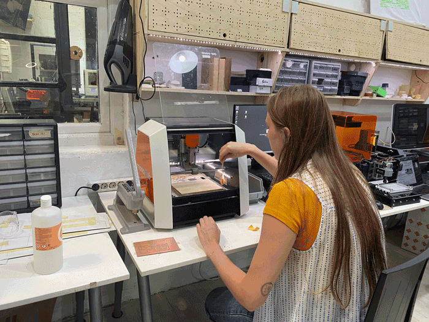
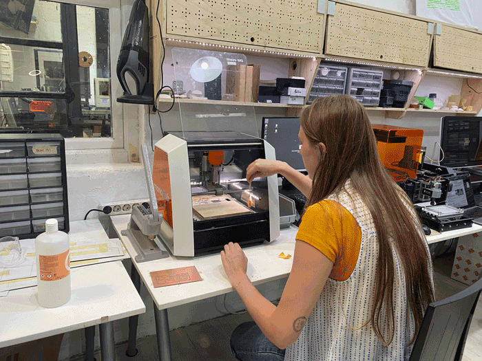

🗓 30 March 2022
We used the Vpanel software to mill the PCB on the Roland SRM-20 machine. I fit the 1/64" end mill and tightened it into the milling machine, set the x,y,z axis coordinates, and imported the files in order nto the machine. We first cut the "Trace" file for the etching of the copper on the board. Then we replaced the end mill bit to 1/32" to proceed to cut the "Outline" and "Drill" files for the PCB board and holes where the ESP32 would stack onto. We had made a few mistukes

We
Key learnings:
Output & Input
I decided to team up with Tatiana to mill and solder the board that I previously designed for Week 6 of Electronic Design. The board I designed was an attachment to the ESP32 feather, which could allow me to connect a light sensor and an LED. We began by exporting the Kicad schematic into Illustrator and separating the layers into the steps we needed to take while milling: cutting the interior design, drilling through the holes and lastly cutting the edges. Each layer was exported into a separate PNG and later imported into MODS to create the gcode file.We used the Vpanel software to mill the PCB on the Roland SRM-20 machine. I fit the 1/64" end mill and tightened it into the milling machine, set the x,y,z axis coordinates, and imported the files in order nto the machine. We first cut the "Trace" file for the etching of the copper on the board. Then we replaced the end mill bit to 1/32" to proceed to cut the "Outline" and "Drill" files for the PCB board and holes where the ESP32 would stack onto. We had made a few mistukes

We
Key learnings:
- setting up the 0;0 origin: we did not realise it was set to a default of 10;10;10, which caused us to mill in the air as opposed to the PCB material.
- 100% CMYK layout. Some of the graphics were not 100% C, M, Y, and K, which made it undetectable by the software and thus did not cut those points.
- making sure to export at 1000pp quality to get full precision.
- making sure to tape the entire back of the PCB board and firmly pressed onto the milling board